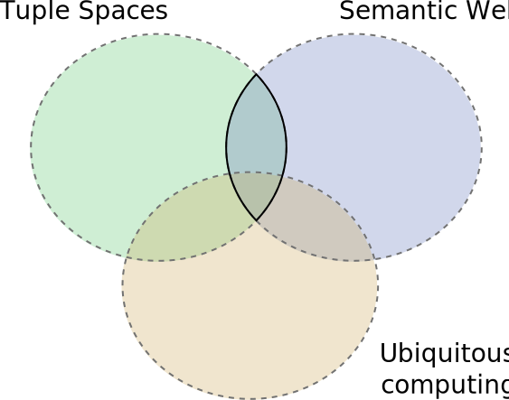
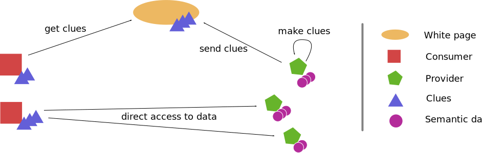

class: center, frontpage .frontcontent-outer[ .frontcontent-inner[ # Coordination of Internet-connected objects through a Distributed Semantic Space ## Aitor Gómez Goiri .breakline[ [gomezgoiri.net](http://gomezgoiri.net)] <!--Internet unit, [DeustoTech](http://www.deustotech.deusto.es/) .breakline[ [www.morelab.deusto.es](http://www.morelab.deusto.es) ]--> .date[November 20, 2013] ] ] --- # Outline 1. Motivation 2. Thesis outline 3. New space model 4. Search architecture 5. Conclusion --- class: center, middle # Motivation <!--## (1/6)--> --- # Motivation 1. UbiComp 1. Space-based computing ??? I'm not talking about the pragmatic motivation, which is to get a PhD ;-) 2 fields influenced me. --- # Space-based computing .subtitle[ ## Motivation ] * Space decoupling * Time decoupling <!-- Dibujito --> ??? * Ideal for environments which change (in short and long time) --- <!-- Molaría más tener un supertítulo en pequeño para que se notase que sigo en la motivation --> # UbiComp .subtitle[ ## Motivation ] Devices imperceptibly working on our behalf. * Its real power "_comes not from any one of these devices, it emerges from the __interaction__ of all of them_". * IoT and mobile computing. ??? UbiComp is a term __coined__ by Mark Weiser (in the early nineties). Lately: Internet of Things and (much less frustrating) mobile computing. -- <div style="margin-top: 3em;" /> ## Problem Devices and applications build upon them are heterogeneous. --- # Interoperability .subtitle[ ## Motivation ] The IEEE defines it as > The ability of two or more systems or components to exchange information > and to use the information that has been exchanged. <!-- TODO cite --> --- # Interoperability .subtitle[ ## Motivation ] The IEEE defines it as > .weak[The ability of two or more systems or components to __exchange__ information > and to __use__ the information that has been exchanged.] <!-- TODO cite --> ??? 1. Rely on widely accepted communication protocols (interop __ab-initio__) 1. Syntactic level: format of the data (i.e. its syntax and encoding) 1. Semantic level: precise meaning of the info * _"understandable by any other application that was not initially developed for this purpose"_ <!-- TODO cite --> * Mencionar SW <!-- Añadir transpa explicando qué es Web Semántica --> --- class: center, middle  ??? After analyzing these research areas... Space-based computing: * Often applied to UbiComp * Used with Semantics Usually centrallizing so... I made myself a question (research question, PhD opportunity) * Can these devices get more involved in the management of the space? ( more involved == Not only mere clients ) * Semantic in limited devices __Overhead__? * Many of the current devices are able to manage their info * Even if it is more verbosed * Some of them can even autonomously reason and expand this information. * Other may need to rely in third entities. * In any case, we can anticipate a trend. --- class: center, middle # Thesis outline <!--## (2/6)--> <!-- Poner algo para que se sepa que no queda muchísimo --> --- class: middle <!--# Hypothesis--> > The TSC paradigm together with the > consideration of its energy and computational impact, leads to UbiComp > environments where heterogeneous devices communicate autonomously in a decoupled > and interoperable fashion. --- class: middle .weak[ > The __TSC paradigm__ together with the > consideration of its __energy and computational impact__, leads to UbiComp > environments where heterogeneous devices communicate __autonomously__ in a __decoupled > and interoperable__ fashion. ] --- # Work-areas 1. Space model. 1. Search-aware architecture for end-to-end communication between devices. 1. Actuation of different actuation mechanisms. --- # Work-areas 1. Space model. 1. Search-aware architecture for end-to-end communication between devices. 1. <del>Actuation of different actuation mechanisms.</del> ??? Let me sketch some of this points in the remaining minutes. For the sake of time, I omit the 3rd one and explain the rest summarized. --- class: center, middle # Space model ??? This is simplified version of all my unfruitful attempts. 5 year process (prior to knowing that I wanted to be a PhD student). --- # Baseline Model .subtitle[ ## Space model ] Triple Space Computing (TSC) * Spaces identified by URIs * Tuples == RDF Triples & RDF Graphs * Templates = triple patterns ??? Uses elements from the SW --- # 1st attempt .subtitle[ ## Space model ] Completely decentralized * Each device manages its own information * It asks to the rest (P2P) ??? Pros: * Avoid depending on others: simplify management * each device manages its own knowledge * Reduces networking in writings * Which are quite frequent (updates of a sensor measure) * Unreliable * Is there any other way of distributing content? Cons: * Inconsistency (Brewer) * Difficult to create: subscription, transactions, etc. * JXTA: not really interoperable * Not appropriate for limited devices * Discontinued * The hell! --- # 2nd attempt (I) .subtitle[ ## Space model ] Same model, we substituted the _communication mechanism_ ??? To interoperate, it is better to adopt a widely accepted mechanism. <!-- Mechanism/protocol --> -- : the Web! <!-- poner flechitas hacia el navegador --> --- # The Web and Hypermedia APIs .subtitle[ ## Space model ] * Massively accepted <!--by humans.--> * A lot of applications expose their capabilities using HTTP APIs * Indeed, it has been widely applied to IoT: the _Web of Things_ -- * REST architectural style comprises the design principles of _the modern web_ <!-- Dibujito o tabla para que se intuya? --> ??? Properties achieved: * Scalability * Simplicity * Portability * etc. --- class: middle <!--# Hypothesis--> > The __alignment of the TSC paradigm with the web's principles__ together with the > consideration of its energy and computational impact, leads to UbiComp > environments where heterogeneous devices communicate autonomously in a decoupled > and interoperable fashion. --- class: middle .weak[ > The __alignment of the TSC paradigm with the web's principles__ together with the > consideration of its __energy and computational impact__, leads to UbiComp > environments where heterogeneous devices communicate __autonomously__ in a __decoupled > and interoperable__ fashion. ] --- # 2nd attempt (II) .subtitle[ ## Space model ] TSC interface for HTTP: * Resource oriented: spaces, RDF Graphs, RDF triples * HTTP verbs mapped to TSC primitives * Status codes, content negotiation, etc. Compatible with (most of) the REST principles. * It is not hypermedia driven (yet) <!--enumerar los principios que cumple--> ??? TSC interface for HTTP compatible with (most of) the REST principles. HATEOAS: future work. * Although it has a human oriented API --- # Problem with the 1st and 2nd attempts .subtitle[ ## Space model ] What about the uncoupling? * Space uncoupling ??? * You can substitute devices in the space * You don't need to configure the space (devices discover in a space) -- <span style="color: #4db849;">✔</span> * Time uncoupling -- <span style="color: #e53f39;">❌</span> ??? * Needed for coordination purposes * But devices are __unreliable__ * Subscriptions => difficult (i.e. more networking) * Replicate contents (i.e. more networking) --- # Final model .subtitle[ ## Space model ] We realized that we used the space for different purposes: 1. Search for information 1. Coordinate through the space -- <img alt="Proposed dual model" src="img/new_model.svg" style="width: 100%;" /> <!-- A modo de evaluación o conclusión, poner una tabla con las propiedades --> ??? Based on our experience. Hence, we propose a dual model. * Coordination space * Outer space: enhanced by the information provided by autonomous devices --- class: center, middle # Search architecture --- class: center, middle  ??? End-to-end WP to enhance the search WP chosen dynamically Considering energy consumption and computation --- # Evaluation: Energy consumption <img alt="Energy consumption for each class" src="img/energy_consumption.svg" style="width: 90%;" /> --- # Evaluation: Network activity <img alt="Requests generated using different strategies" src="img/requests_by_strategies.svg" style="width: 90%;" /> --- # Evaluation: Network activity (by type of device) <img alt="Energy consumption for each class" src="img/activity_measures.svg" style="width: 100%; margin-top: 10%;" /> <!-- === class: center, middle # Actuation === # Actuation through TSC === # Actuation in REST * RESTdesc === # Alignment proposal * Reuse REST providers * Reuse consumers which use space * Avoid their modification--> --- class: center, middle # Conclusion --- # Conclusion * Mixing best of two worlds: space-based computing and the web. * Energy-aware search * Future work: * Coordination space distribution * Security * Evaluation of its performance in real deployments * Etc. ??? Coger de mi tesis --- class: center, middle # Questions? Aitor Gómez Goiri .breakline[ aitor.gomez (at) [deusto (dot) es](http://www.deusto.es)]